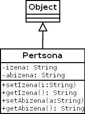

Programazioa > Objetuei bideratutako programazioaren oinarriak >
4. ariketa
Pertsona izeneko klase bat inplementatzea nahi da hurrengo klase-diagrama kontutan hartuz. Ondoren, pertsona ezberdinak sortzeko eta manipulatzeko, ProbaPertsona izeneko beste klase bat sortuko dugu.
Kasu honetan Pertsona klasearen izena eta abizena atributuak pribatuak dira eta sortuko ditugun pertsonen informazioa ezin izango da gorde eta berreskuratu orain arte egin dugun bezala. Horretarako setIzena(), setAbizena(), getIzena() eta getAbizena() metodo berriak erabili beharko dira.
Klase-diagrama
- Pertsona

Kodea
- Kontua.java
- ProbaKontua.java